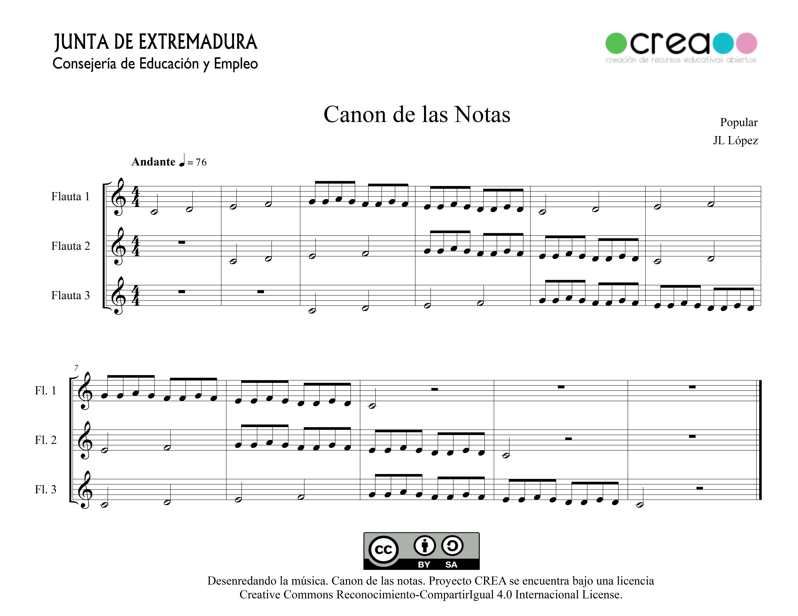
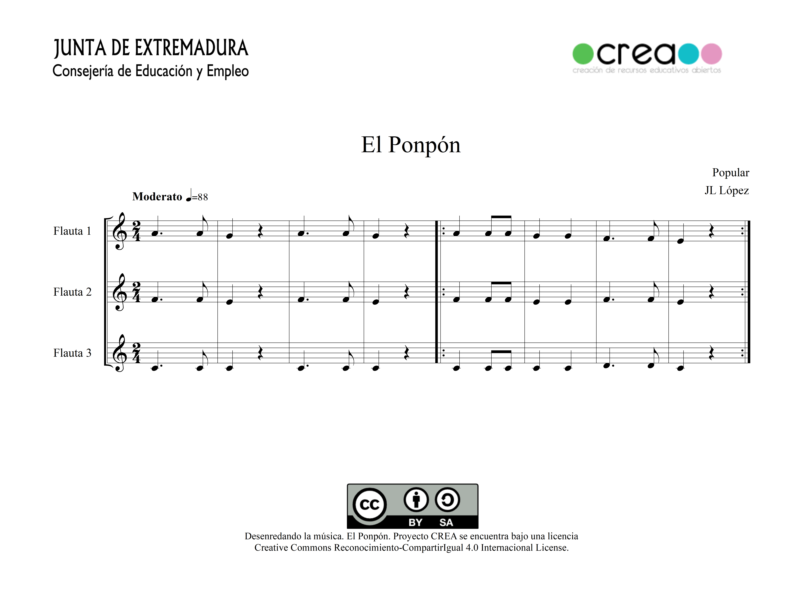
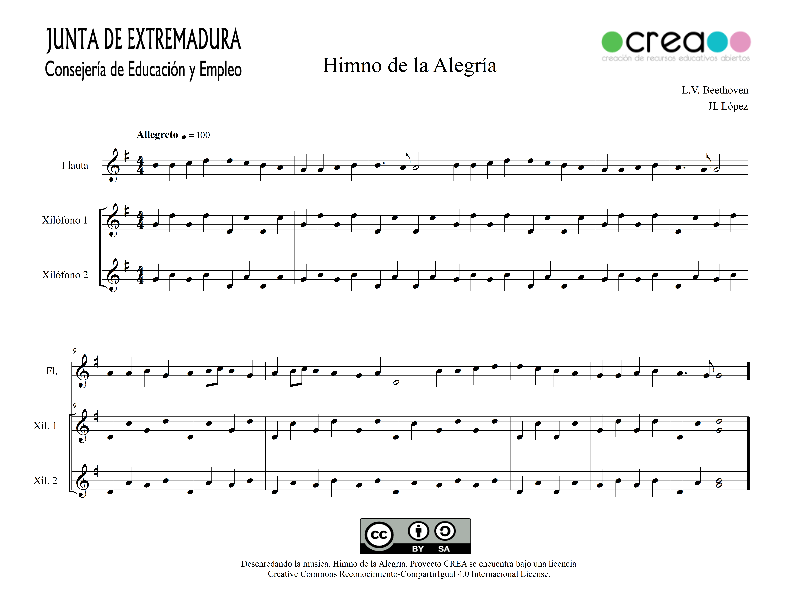

Actividad Previa


Estamos ya organizados en los grupos de 3 y de 4 que ha formado el profesor. Podemos descargarnos el documento para formalizar el grupo con los cargos. En caso de que el grupo solo tenga tres miembros, el portavoz lo asumirá el coordinador.
En primer lugar, vamos a observar las partituras, y lo primero que vemos es que todas tienen 3 melodías, por lo que en los grupos de 4 deberán duplicar una de las voces, preferiblemente la aguda (la de más arriba).
A continuación, vamos a seleccionar qué parte va a interpretar cada uno de los miembros del grupo, teniendo en cuenta la dificultad de cada partitura y la destreza interpretativa de cada alumno/alumna. Podemos fijarnos en estas ideas.
Por último, vamos a descargar las partituras para trabajarlas de forma individual.
- Si el grupo es de 4, que el que tenga más dificultades sea el que duplica.
- Muchas veces la melodía más grave (la de abajo) suele ser más complicada por la dificultad de las notas graves.
- En ocasiones la parte aguda es la que más suena y es la más fácil.
- La parte de los xilófonos no son ni más fáciles ni más difíciles, depende del sentido del ritmo del alumno/alumna.
- No olvidéis que lo importante es el conjunto y no hay que pensar de forma egoísta, si no qué es lo mejor para el grupo
Aquí trabajaremos, sobre todo, la Planificación, porque sabemos que nuestro objetivo a corto plazo es interpretar, en conjunto, una pieza musical con varias voces distintas.
Por ello, será muy importante determinar qué instrumento y qué voz vamos a tocar cada uno de nosotros, en función de lo bien que se nos de tocar la flauta o el xilófono. Debemos valorar qué parte de la canción debe sonar más y la dificultad que cada una de estas partes entraña.
Actividad 1: Nos aprendemos las partituras


Vamos a trabajar las partituras de forma individual. Si es necesario, podemos repasar las posiciones de las notas de la flauta.
{kind=link}
Como apoyo, una vez que las hayamos estudiado, podemos tocarlas sobre la propia melodía de forma online. Para los que tengan más dificultades para el estudio individual, pueden trabajarla con las posiciones de flauta en la sección de vídeos, donde podemos ver todas las partes de las cuatro partituras.
PARTITURAS

En este enlace podemos descargar las partituras e imprimirlas para trabajarlas en casa o en clase.



ONLINE

También tenemos a continuación la partitura en MuseScore por si la queremos trabajar escuchándola. Puedes modificar la velocidad de la música para adaptarla a tu nivel.
{kind=link}
"PonPon" by jllopeza01
"Canon de las notas notas" by jllopeza01
"Himno de la Alegría" by jllopeza01
VÍDEOS

En los siguientes vídeos tenemos todas las partes de la canción con las posiciones de flauta.
Dónde están las Llaves
- Flauta 1, 2 y 3
El Ponpón
- Flauta 1
- Flauta 2
- Flauta 3
El canon de las notas
- Flauta 1, 2 y 3
El Himno de la Alegría
- Flauta
- Xilófono 1
- Xilófono 2
En cada aprtado veremos qué Función Ejecutiva trabajamos.
En esta actividad trabajaremos varias funciones ejecutivas.
Cuando leamos la partitura, trabajaremos la Atención selectiva, puesto que la lectura musical conlleva un movimiento secuencial y línea que debemos seguir, empezando en una nota y pasando a la siguiente, pero teniendo en cuanta los signos de repetición que nos hacen retroceder para poder continuar.
También trabajaremos la Inhibición, ya que tendremos que ignorar estímulos irrelevantes que nos impidan continuar el estudio.
Trabajaremos la Memoria de trabajo porque tendremos que usar nuestros conocimientos musicales para poder decodificar los sonidos que representan las notas y figuras musicales y la Memoria procedimental, debido a la habilidad que hemos adquirido con el tiempo para aprender a tocar la flauta.
Por último trabajaremos la Atención dividida porque cada nota musical nos da información al menos de dos aspectos: la altura de la nota, la duración y en algunos casos la intensidad. Esto quiere decir, los agujeros que debemos tapar con los dedos en la flauta, y lo que debe durar esa nota, y la fuerza con la que debemos soplar, todo esto en décimas de segundo.
En este caso se supone que ya hemos hecho el trabajo de estudio de la partitura y vamos a ensayar con sobre la propia melodía.
Aquí sobre todo trabajaremos la Inhibición, puesto que la melodía no va a detenerse, y tenemos que evitar cualquier distracción para no perder la pulsación de la reproducción online.
Trabajaremos la Atención sostenida, porque debemos escuchar la melodía de la reproducción para ir al mismo tempo.
También puntualmente utilizaremos la Flexibilidad cognitiva, porque si en un momento dado nos paramos, para no empezar de nuevo, tenemos que intentar retomar la canción en el punto en el que esté la reproducción online.
Otra función ejecutiva que trabajaremos será la Planificación, porque vamos a determinar la velocidad de la reproducción online, en función de la soltura con la que nos sabemos ya la partitura.
Vamos a trabajar la Metacognición porque al tocar sobre la melodía, podremos valorar si la hemos estudiado bien o no, encontrar los fallos, localizar las dificultades y repasarla si es necesario.
Igualmente usaremos la Atención dividida porque debemos de estar pendiente de nuestra interpretación y la del reproductor.
Por último trabajaremos la Memoria de trabajo, puesto que vamos a reproducir, sobre una audio, la partitura que previamente hemos aprendido, y la Memoria procedimental, debido a la habilidad que hemos adquirido con el tiempo para aprender a tocar la flauta.
A los alumnos que les falta destreza en la lectura musical, optan por aprenderse las melodías por imitación. Para esto son estos vídeos.
En este caso trabajamos la Inhibición, para que ningún estímulo nos distraiga del foco que supone seguir el vídeo.
Trabajaremos la Atención sostenida, para estar pendiente en todo momento de las posiciones de flauta.
También vamos a trabajar la Metacognición porque al tocar sobre el vídeo, podremos valorar si nos la sabemos o no, y así repetirla hasta lograr el nivel deseado.
Por último trabajaremos la Memoria procedimental, ya que vamos a aprender a tocar la flauta de la forma más básica, por imitación, ya vamos a desarrollar nuestra habilidad para tocar este instrumento.